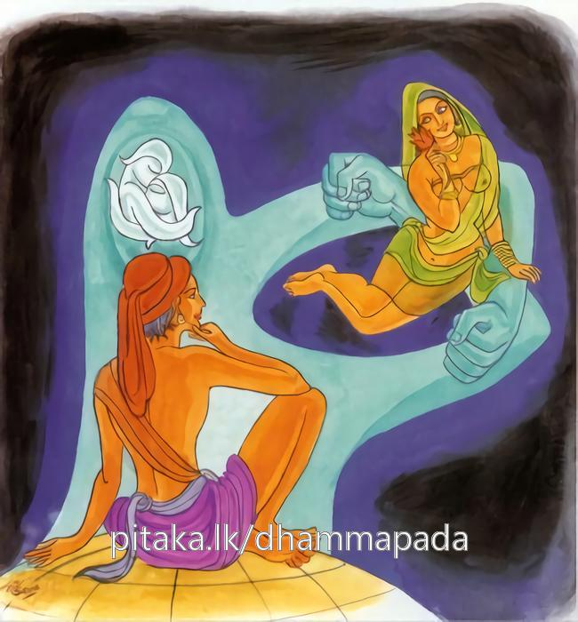
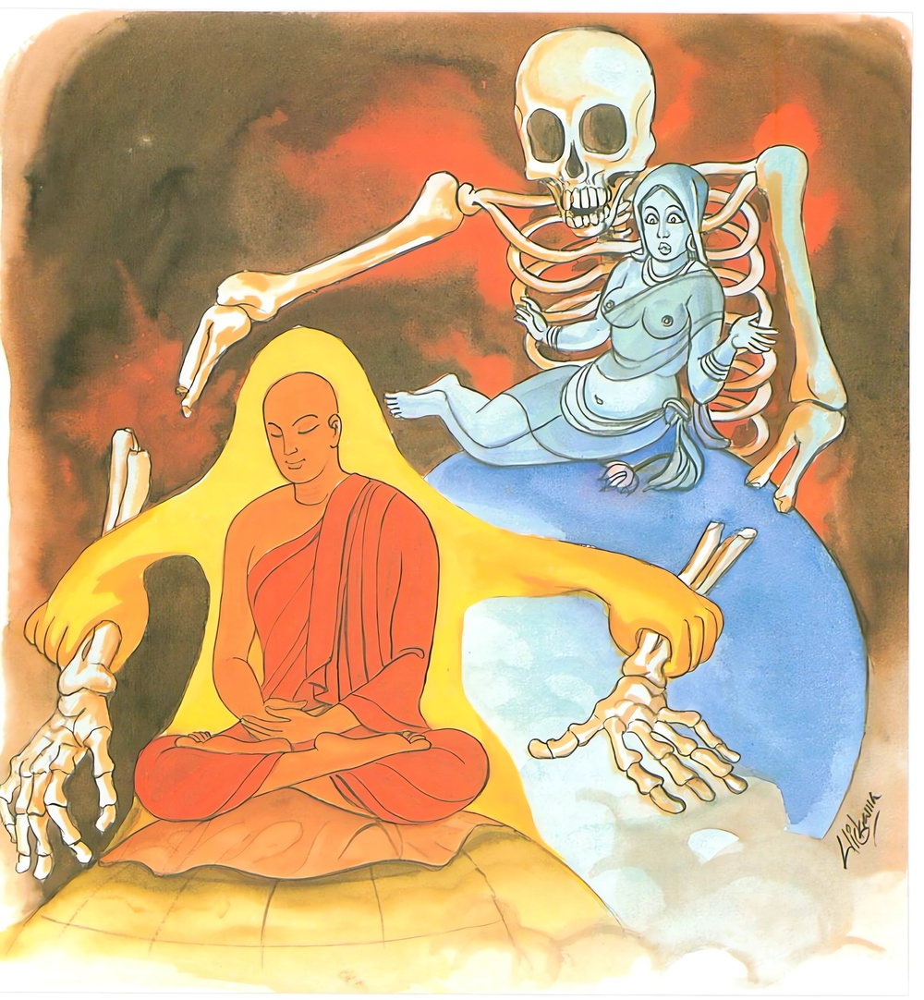

24-7 දහරක භික්ෂු පිළිබඳව කථා පුවත
මෙම කතාව සද්ධර්ම සාගරයෙන් ද කියවන්න.
විතක්කපමථිතස්ස ජන්තුනො තිබ්බරාගස්ස සුභානුපස්සිනො
භිය්යො තණ්හා පවඩ්ඪති එස ඛො දළ්හං කරොති බන්ධනං.
කාමවිතර්කාදි අකුශලවිතර්කයෙන් මැඩුනු, දැඩි කාමරාග ඇති, අරමුණු ශුහ වශයෙන් බලන සුලු වූ සත්ත්වයාහට බොහෝ කොට ම තෘෂ්ණාව වැඩේ. මේ පුද්ගල තෙම වනාහි තෘෂ්ණාබන්ධනය තර කරන්නේ ය.

විතක්කුපසමෙ ච යො රතො අසුභං භාවයති සදා සතො
එස ඛො ව්යන්තිකාහිති එස ඡෙච්ඡති මාරබන්ධනං.
යමෙක් අකුශලවිතර්කව්යුපශමයැ යි කියන ලද දශඅශුභාලම්බනයෙහි උපන් ප්රථමධ්යානයෙහි ඇලුනේ වේ ද, හැම කල්හි ම සිහි ඇතියේ ඵ් අශුභධ්යානය වඩා ද, මෙ තෙම වනාහි තෘෂ්ණාව ක්ෂය කරන්නේ ය. මෙ තෙම මාරබන්ධනය (හෙවත් ත්රෛභූමකවෘත්තය) සිඳැ ලන්නේ ය.

"විතක්ක මථිතස්සා” යන මේ ධර්ම දේශනය බුදුරජාණන් වහන්සේ දෙව්රම වැඩසිටිය දී එක් කුඩා භික්ෂුවක් නිමිති කරගෙන දේශනා කළහ.
එක් කුඩා භික්ෂුනමක් සලාක ගෙයින් තම සලාක කැඳ ගෙන ආසන ශාලාවට ගොස් එහි ජලය නොලැබී ජලය සඳහා එක් ගෙයකට ගියේය. එක් කුමාරිකාවක් ඔහු දැක්ක පමණින් උපන් ස්නේහයෙන් ස්වාමීනි නැවත පැන් අවශ්ය විටක මෙහාටම එන්නැයි පැවසුවාය. එම භික්ෂුව එතැන් පටන් ජලය නොලැබෙන දිනවලට එම නිවසටම යයි. ඇයද පාත්රය ගෙන පැන් දෙයි. මෙලෙස කාලය ගතවනවිට කැඳ දී එක් දිනක් එහි වාඩි කරවා බත් දුන්නාය. ඔහු ළඟින් වාඩි වී ස්වාමීනි මේ ගෙදර නැති දෙයක්නම් නැත. හුදෙක් අපි විමසන මිනිසෙක් නොලබමුයි කථාව ඉපදවීය. ඔහු දින කීපයකින් ඇගේ කථාව අසා කළකිරුණි. ඉක්බිති එක් දිනක් ආගන්තුක භික්ෂුවක් දැක ඇවැත්නි නුඹ කෘෂ වූයේ පඩුවන් පැහැ ඇත්තේ වෙයි. විමසා ඇවැත්නි කළකිරුණෙමි. පැවසු විට ආචාර්ය උපාධ්යාවරුන් වෙත ගෙන ගියහ. ඔවුන් ද දහර භික්ෂුව තථාගතයන් වහන්සේ වෙත ගෙන ගොස් මේ පුවත දැනුම් දුන්හ. බුදුහු භික්ෂුව ඔබ කළකිරුණ බව සැබෑවක් දැයි විමසුහ. සැබෑවක් බව පැවසු විට බුදුහු මහණ මා වැනි පටන් ගත් වීරිය ඇති මේ බුද්ධ ශාසනයේ පැවිදි වී මම සෝවාන් වීමි මම සකෘදාගාමි වීමි ආදි වශයෙන් නොකියා කුමක් නිසා කළකිරුණේද? බැරෑරුම් දෙයක් ඔබ කළෙහිය. කුමක් නිසා කළකිරුණේදැයි විමසුහ. ස්වාමීනි එක් ස්ත්රියක් මට මෙසේ කීවාය යනුවෙන් තොරතුරු පැවසුවිට මහණ ආශ්චර්යක් නොවේ. ඇගේ ක්රියාව පුදුමයක් නොවේ. ඇය පෙරභවයේදී මුළු දඹදිව ශ්රේෂ්ඨ ධනුර්ධර පඩිවරයා අත්හැර එම මොහොතේ දුටු කෙනාට සෙනෙහස උපදවා ඔහු ජීවිතක්ෂයට පත් කළේයයි පවසා භික්ෂුගේ ඉල්ලීම අනුව අතීත කථාව ගෙනහැර දැක්වුහ. පෙර චුල්ල ධනුග්ගහ පණ්ඩිතව සිටි සමයේ තක්ෂිලාවේ දිසාපාමොක් ආචාර්යවරයා සමීපයෙහි ශිල්ප උගෙන ගුරුවරයා සතුටුව දුන් දුවණිය රැගෙන බරණැසට යන අතර එක් කැලෑවට පිවිසෙන තැනක ඊතල පනහකින් සොරුන් පනහක් මරා ඊතල අවසන් වූ විට සොර දෙටුවා ගෙන බිම හෙලා සොඳුරිය කඩුව ගෙන එන්නැයි පැවසුවිට ඇය විසින් එකෙනෙහි දුටු සොරාට සෙනෙහස බැඳ සොරු අත මිට තබා සොරා විසින් ධනුග්ගහ පඩිවරයා මැරූ බව පවසා සොරා විසින් ඇය රැගෙන යන විට, මැය තවත් එකෙක් දැක මා මරණු ඇතැයි කියා මැයගෙන් කවර ප්රයෝජනයක්දැයි සිතා එක ගඟක් දැක ඇය මෙතෙර තබා ඇගේ බඩු ගෙන භාණ්ඩ එතෙර තබා ඔබ එතර කර වීමට එමියි කියා ඇය අත්හැර ගිය ස්වරූපය අනාවරණය කර.
1. බ්රාහ්මණය සියළු භාණ්ඩ රැගෙන එතරට තරණය කළේය ඉක්මනින් වහාම එව මේ නදියෙන් මා ද වහා එතර කරවා
2. පින්වතිය දිගු කලක් ඇසුරු කළ ස්ථිර සැමියාගෙන් වෙනස් වී, ඇසුරක් නැති අලුතෙන් හමු වූ මා වෙත ඔබ බැඳුනි. තී (යම්කිසි දවසක) මාගෙන් ද වෙනස් වී අනෙකෙකු පාවා ගත්තීය. මම මෙතැනිනුත් ඉතා ඈතට යන්නෙමි.
3. තුවරලා ලැහැබක කවර තැනැත්තියක් මහ හඬින් සිනාසේද, නැටුමක් ගැයු මක් මෙහි නැත. සුන්දර ඌරු යුග්මයක් ඇති රුසිරු තැනැත්තිය හැඩිය යුතු අවස්ථාවේ කුමක් හෙයින් සිනා සෙත්ද?
4. මෝඩ වු සිඟාලය තෝ නුවණ නැත්තෙහි මාළුවාද මස් වැදැල්ලද දෙකම් නැති කර ගත්තොත්ය. දැන් අසරණයකු සේ කල්පනා කරන්නෙහිය.
5. අනුන්ගේ වරද දැකීම පහසුය. තමන්ගේ වරද දැකීම අපහසුය. තී සැමියා ද සොර සැමියා ද දෙදෙනාම නැති කරගෙන පිරිහී මා මෙන් තී ද කල්පනා කරමින් ළත වේ.
6. ජම්බුකය ! ඔබ යමක් කීවේ එය නිවරදිය මම මෙතැනින් ගොස් අනෙක් හිමියකු සොයා ඔහු සමගින් යන්නෙමි. යමෙක් මැටි තලියක් සොරා ගනීද, හේ ඒ පුරුද්දෙන් රන් තලියක් සොරකම් කරන්නේ ය. ඒ පාපකර්මය කළාය. නැවත නැවත ද තී එයම කරන්නීය.
මෙලෙස පඤ්චක නිපාතයේ චුල්ලධනුග්ගහ ජාතකය විස්තර කොට එකල චුල්ලධනුග්ගහ පණ්ඩිත ඔබ වුයේය එම ස්ත්රීමැයයි. සිවලෙකුගේ ස්වරූප යෙන් පැමිණ ඇයට නිග්රහ කරන ලද සක් දෙවිඳු වුයේ මම යි. පවසා එම ස්ත්රීය දුටු පමනින් සෙනෙහෙ බැඳ මුළු දඹදිවට අග්ර පණ්ඩිතවු ධනුග්ගහ විනාශ කළේය. එබඳු එම ස්ත්රීය නිමිති කරගෙන ඇතිවු ඔබේ තෘෂ්ණාව සිඳ දමන්නැයි භික්ෂුවට උපදෙස් දී දේශනා කරන්නේ මෙම ගාථාව දේශනා කළහ.
විසම වු අරමුණු සුව වසයෙන් ගෙන
තන්හා වඩනා අනුවණයෝ
සංසාරේ බැම් තදකර ගනිමින්
ජරා මරණ දුක් විඳ ගන්නේ.
යුතු වී හැමදා හොඳ සිහියෙන්
අසුබ භාවනා වඩන කෙනා
මාර බැඳුම් බිඳ සියලු කෙලෙස් සිඳ
නිවන් මගින් සැනසුමම ලබයි.
කාමය පිළිබඳව නො එක් සිතිවිලි වලින් මඩනා ලදුව, තියුණු රාග ඇති විෂම අරමුණු සුභ වසයෙන් දකින, පුද්ගලයාට බොහෝ සෙයින් තණ්හාව වැඩේ ඒ තැනැත්තා තණ්හා බැම්ම දැඩිකරයි.
යමෙක් කාමයන් පිළිබඳ සිතිවිලි සන්සිඳවීමෙහි ඇලුනේද, හැම කල්හි ම සිහියෙන් යුතු වුයේ අසුභ භාවනාව වඩයිද, මේ තැනැත්තා තණ්හාව නසන්නේය. ඔහු මාරයාගේ බැම්ම සිදින්නේය.
මෙහි - විතක්කපමථිතස්ස කාම විතර්කාදී විතර්කයන්හි ගැලුනු. තිබ්බාරාගස්ස රාග බහුල වූ, සුභානුපසසිනෝ - අරමුණු සුභ නිමිති වසයෙන් ගෙන, කරන ලද අසුභ නිමිති සුභවයෙන් ගෙන සිහිකරන්නා හට, තණහාති මෙබඳුවූ එකම ධ්යානයක්වත් නොවැඩේ. ඉක්බිති ෂඩ්වාරික තෘෂ්ණාවම වැඩේ. භීයා වඩඨති බොහෝ සෙයින් වැඩේ. එසඛො මෙවැනි පුද්ගල තෙමේ. තෘෂ්ණා බන්ධනය දළ්හං ස්ථිර කෙරේ. දැඩි කෙරේ. විතක්කුප සමෙති මිථ්යා විතර්ක විනාස කිරීම සඳහා දස අසුභ යන්හි ප්රථම ධ්යානයෙහි, සදා සතො - යමෙක් මෙහි නිම වී එළඹ සිටි සිහියෙන් එහි අසුභ ධ්යානය වඩයි ද, ව්යානති කා හීතී මේ භික්ෂුව තුන් භවයන්හි උපදින්නා වූ තෘෂ්ණාව දුරුකිරීම කරන්නේය. මාරබන්ධනං හෙතෙමේ භූමික සංසාර වෘත සඞ්ඛ්යාත මාර බන්ධනය. සිදිය යන අර්ථය දේශනාවසානයේ ඒ භික්ෂුව සෝවාන් පෙලෙහි පිහිටියේය. පැමිණ සිටි අයට සාර්ථක වුයේය.